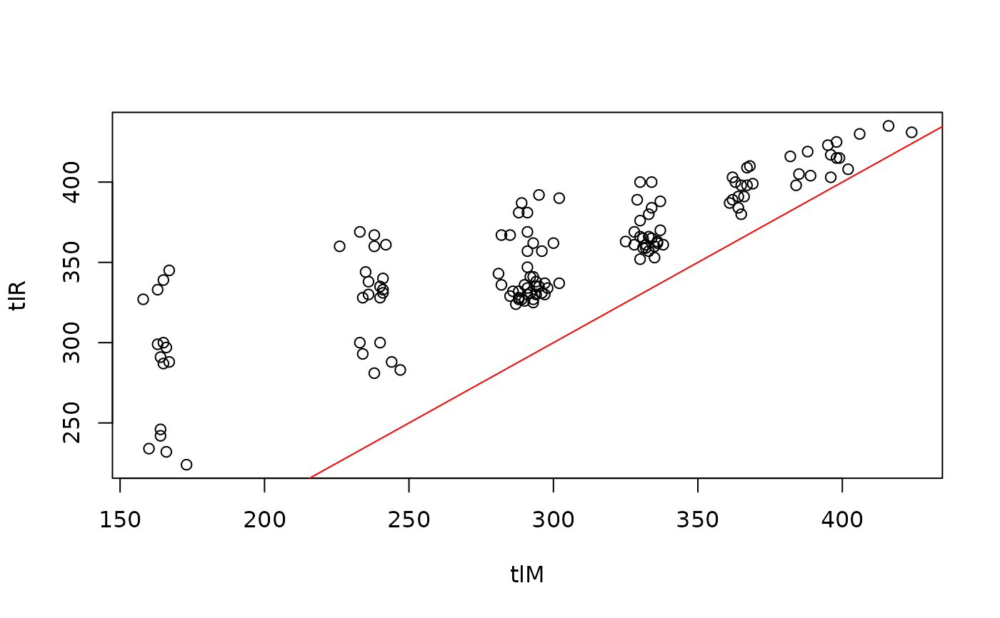

Hypothetical lengths at time of marking/tagging and recapture and time-at-large (i.e., between marking and recapture). These data are useful for testing growth related functions (e.g., findGrowthStarts) as they were generated from known growth functions (e.g., von Bertalanffy) with some random error and are, thus, “as good as it gets” for testing.
Format
A data frame of 128 observations on the following 5 variables:
- tag
A unique fish ID (i.e., tag) number
- tlM
Total length at time of marking/tagging simulated from a von Bertalanffy growth function with Linf=450, K=0.3, and t0=-0.5
- tlR
Total length at time of recapture simulated from a von Bertalanffy growth function with Linf=450, gi=0.3, and ti=3 and assuming a random time-at-large from marking/tagging of roughly 1, 2, or 3 years.
- deltat
Time-at-large (i.e., time between marking/tagging and recapture) simulate to be 1, 2, or 3 years (with decreasing probability) and some random error of a few days.
- deltaL
Change in length between the time or marking/tagging and recapture (i.e.,
tlR-tlM).
Examples
str(GrowthData3)
#> 'data.frame': 128 obs. of 5 variables:
#> $ tag : int 5 8 9 14 17 19 32 38 41 44 ...
#> $ tlM : num 240 226 289 333 361 173 396 368 331 247 ...
#> $ tlR : num 335 360 387 366 387 224 403 410 359 283 ...
#> $ deltat: num 2.102 2.866 2.852 1.011 0.853 ...
#> $ deltaL: num 95 134 98 33 26 51 7 42 28 36 ...
head(GrowthData3)
#> tag tlM tlR deltat deltaL
#> 1 5 240 335 2.1022151 95
#> 2 8 226 360 2.8664670 134
#> 3 9 289 387 2.8515423 98
#> 4 14 333 366 1.0112670 33
#> 5 17 361 387 0.8532658 26
#> 6 19 173 224 0.8719730 51
plot(tlR~tlM,data=GrowthData3)
abline(a=0,b=1,col="red")
